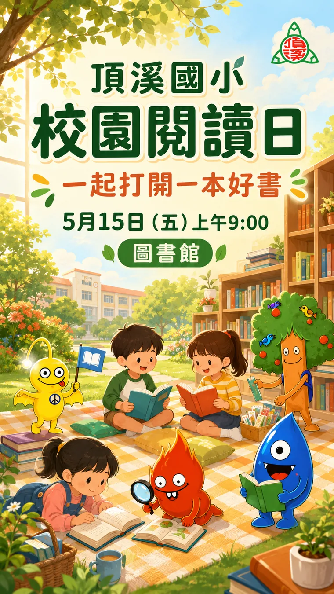

提供活動資料
把活動名稱、時間、地點、對象、報名方式與提醒交給 AI，先整理成海報上會出現的文字。
 頂溪國小
頂溪國小第 8 單元
接著使用第 7 單元準備好的品牌生圖流程，把活動資料交給 AI，決定海報風格，再把校徽放上去。
如果還沒完成上一單元，先回到第 7 單元，讓 AI 準備品牌生圖流程；這樣它才知道去哪裡取得四精靈素材，也知道校徽要另外放上去。
這次把作品放大成活動海報：先給 AI 活動資料，請它整理文字，再一起決定海報適合什麼風格。
風格可以由你指定，也可以請 AI 依活動性質建議。文字和版型確認後，再用 AI 工作瀏覽器製作有校徽與四精靈的活動海報。

這一頁要練習把資料、風格和學校識別放進同一個工作流程。
把活動名稱、時間、地點、對象、報名方式與提醒交給 AI，先整理成海報上會出現的文字。
你可以指定風格，也可以請 AI 依活動性質建議，例如溫暖、活潑、正式、閱讀感或戶外活動感。
品牌生圖流程會把校徽放到合適的位置，讓海報有學校識別，也保持畫面自然。
下面是一個可以照著走的節奏：先整理文字，再確認風格，最後加入校徽。
請啟動頂溪國小品牌識別生圖流程。我想做一張活動海報。資料在 D:\AI工作資料\活動海報。請先整理海報上要出現的文字，現在先不要生圖。
我整理出活動名稱、日期時間、地點、參加對象和報名方式。請先確認這些文字是否正確，再決定海報要用 A4 張貼、LINE 分享，或校網縮圖。
文字確認。請依活動性質建議 2 種海報風格，讓我選一種。現在先不要生圖。
我建議兩種方向：一是溫暖校園風，適合親子或閱讀活動；二是明亮活潑風，適合闖關、園遊會或戶外活動。你想用哪一種？
用溫暖校園風。請做直式海報，校徽放右上角，四精靈融合適當動作，開始製作。
ChatGPT 生圖中...我會依活動主題安排四精靈的動作，保持角色外型正確，並把校徽放到右上角，確認整體是否自然，再請你檢查文字、版面與發布尺寸。
海報做好後，不急著發布；先看文字、校徽和精靈。
活動名稱、日期、時間、地點、對象、報名方式要逐項確認，手機上也要看得清楚。
校徽要能被看見，但不要壓到標題、人物或主要畫面；如果太突兀，就請 AI 調整大小或位置。
四精靈的動作要配合活動氣氛，不要搶走活動名稱、日期和報名資訊的位置。
下一單元
其實「品牌識別生圖」是以技能（skill）的方式存在 Codex 裡。如果你在對話框輸入 /dingxi，就會自動列出 dingxi-brand-image 技能；這樣就可以直接呼叫生圖技能，取代自然語言觸發，會比較精準。下個單元，我們就來說說使用 Codex(AI助手) 非常重要的概念 —— 技能(skill)。